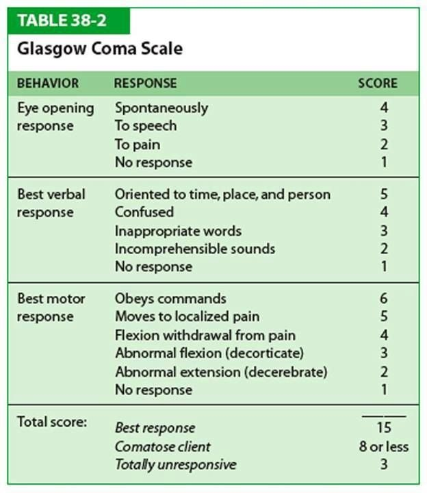
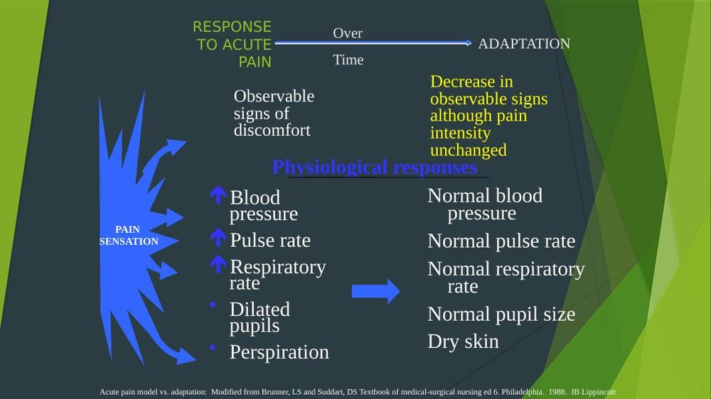
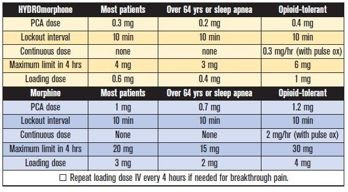

Fundamentals Review · Topic 9
Neurosensory & Pain
Combines two lecture sets: neurosensory (neuro assessment/ABCs/GCS, diagnostics, patient safety/care, sensory deprivation/overload, sensory deficits, headaches) and pain (physiology/types, assessment, non-pharmacological and pharmacological management, PCA/epidural).
Neuro Assessment Basics: ABCs, GCS & LOC

- Always check ABCs first with any neuro decline — a GCS of 8 or lower means the patient typically can't protect their own airway. If a patient is declining neurologically, first rule out reversible physiologic causes.
- The 4 H's to check with any neuro change: Hypoxia, Hypoglycemia (checking blood glucose is part of stroke protocol — hypoglycemia can mimic stroke symptoms), Hypotension, Hypoventilation.
- GCS scoring: 3–15 total (3 is the lowest possible — a GCS of 0 doesn't exist). Severe brain injury: ≤8. Moderate: 9–12. Mild: 13–15. You don't need to memorize every point value, but should recognize an 8 is far worse than a 14.
- Level of consciousness terms (best to worst): Alert (awake, easily aroused, responsive) → Lethargic/somnolent (drowsy, awakens to voice, responds appropriately but slowly — normal if just woken from sleep, abnormal if constant) → Obtunded (needs loud/vigorous stimulation, confused, mumbled speech) → Stuporous (cannot stay awake, responds only to vigorous/painful stimulation, mumbles/groans) → Comatose (unresponsive, no purposeful movement, possibly only reflex activity).
- Pupil changes and gag reflex loss are late signs of neurologic decline — unequal pupils in a patient with known head injury/stroke is an emergency.
- A focused neuro assessment is needed for: any abnormal finding on a basic assessment, known neuro disorders, trauma/head injury, drug-induced states, or patient-reported neuro complaints.
Neuro Diagnostics: X-ray, CT, MRI & EEG
- Skull/spinal X-ray: shows bones only — good for fracture, spinal alignment; cannot show a brain bleed or stroke. C-collars can stay on during neck X-rays.
- CT scan: the gold standard for acute stroke/brain bleed identification — fast 3D imaging of bone/tissue/organs; IV contrast needed to evaluate circulation. Requires informed consent, screening for iodine/shellfish allergy (contrast reaction risk), and possible anti-anxiety medication for claustrophobia. Not always NPO for a neuro CT.
- MRI: more detailed than CT, no radiation exposure, but expensive/less available and takes longer — usually done after CT if the CT is inconclusive. Requires screening for metal (implants, devices, old surgical hardware) and removing medication patches (e.g. fentanyl, can cause burns) — very loud, so hearing protection is used.
- EEG (electroencephalogram): monitors brain electrical activity — used to diagnose seizures, evaluate sleep disorders, and can be part of confirming brain death. Electrodes attached with a conduction paste that's hard to remove from hair (does not require shaving). May be done sleeping, awake, or with a stimulus (e.g. sleep deprivation or flashing lights) depending on the patient's seizure trigger.
- Universal safety note: always confirm an armband is on before any imaging procedure — techs will not proceed without one.
Neuro Patient Safety & Care
- Fall precautions: bed in lowest position, call light in reach, adequate lighting, clear floor, frequent/hourly rounding.
- Communication: calm approach, assume the patient can hear you unless told otherwise, explain care in simple instructions, involve speech-language pathology (SLP) for communication difficulty.
- Nutrition/hydration: assume dysphagia risk and keep NPO until a formal swallow evaluation clears the patient (part of stroke protocol) — educate family not to bring food/water. May need enteral tube feeding or, as a last resort, TPN. Monitor albumin/prealbumin.
- Skin: assess bony prominences and any neglected side, turn every 2 hours, elevate heels, consider specialty mattresses.
- Mobility: passive (nurse-assisted) vs. active (patient-performed) range of motion — prevents contractures and supports strength; get patients up to a chair when possible (also helps prevent DVT).
- Elimination: monitor for constipation (from immobility) and urinary retention (may require a long-term catheter in severe deficits); keep incontinent patients clean/dry.
- Controlled environment: limit disturbances, protect uninterrupted sleep, maintain a normal sleep-wake cycle, involve family in care planning.
- Seizure precautions: padded bed rails, working suction available, oxygen available — bring this forward from prior coursework. Patients with brain injury/bleeding are at increased seizure risk from irritated brain tissue.
- Handoff report: for a patient at GCS 15 with no deficits, a brief statement suffices; for anything less than 15, give detailed specifics (which side is weak, what's changed) so the incoming nurse can detect any new acute change.
Sensory Deprivation & Overload
- Three components of any sensory experience: reception (stimulation of a receptor), perception (interpreting the stimulus — impaired by anything affecting LOC), and reaction (the response).
- Factors influencing sensory function: age (extremes at higher risk for overload or deprivation), amount of meaningful stimuli (hospitalization removes normal stimuli like pets/family/work), amount of stimuli (excess → overload), social interaction/support, environmental factors (occupational noise exposure), and cultural factors (e.g. patients from very quiet lifestyles/rural areas may be especially vulnerable to ICU sensory overload).
- Sensory deprivation: caused by isolation, loss/impairment of senses, confinement, emotional disorders, brain injury, or certain medications. Effects — cognitive (decreased attention/memory/problem-solving), affective (boredom, depression, apathy, restlessness/anxiety), and perceptual (reduced color perception, altered spatial/time judgment).
- Sensory overload: excessive stimuli prevent a meaningful brain response — common in the ICU (alarms, lights, conversations). Symptoms: fatigue, irritability, disorientation, decreased problem-solving, racing thoughts, restlessness, anxiety — easily mistaken for mood swings or confusion.
- Nursing care — deprivation: short, meaningful stimulation throughout the day, tactile stimulation (hair brushing, back rubs), frequent reorientation, controlled visitor numbers, environmental variety (window seating, larger clock), assistive devices. Nursing care — overload: assess/reorient, control excessive stimulation (turn off unneeded alarms), protect uninterrupted rest, control visitors, manage pain, keep a calm unhurried presence.
Sensory Deficits & Nursing Care
- Vision: presbyopia (age-related farsightedness). Care: announce your presence, stay in their visual field, speak in warm/normal tones (not necessarily louder), explain care before starting, orient to the room, keep paths clear, describe food/object placement using a clock reference.
- Hearing: presbycusis (age-related, usually symmetrical hearing loss) — always check for cerumen (earwax) impaction first. Care: amplify sound appropriately, ensure hearing aids are in and working, add flashing lights for alarms/safety, speak slowly in a normal tone, use communication boards, augment teaching with written material. (High-yield for exams per the lecture.)
- Taste/smell: xerostomia (dry mouth) affects taste. Care: well-seasoned/appealing food, separate textures, stimulate appetite with pleasant aromas, remove unpleasant odors. Safety for smell loss: working smoke detectors, checking food expiration/appearance instead of smell-testing, caution with gas appliances and cleaning chemicals.
- Tactile: seen with peripheral neuropathy (diabetes), spinal cord injury, and phantom limb pain after amputation. Care: therapeutic touch (hair brushing, back rubs) when appropriate, protect insensate pressure areas, watch for hyperesthesia (oversensitivity — avoid loose/irritating linens), verify bath water temperature (never rely on the patient to sense it), avoid heating pads, and check feet daily in diabetic neuropathy.
- Communication deficits — aphasia: expressive aphasia = understands language but cannot produce/express words. Receptive aphasia = cannot understand spoken/written language, though words can still be spoken. Care: be patient, don't rush, use simple short questions/yes-no questions (especially for expressive aphasia), communication boards, sign language interpreters as needed.
Headaches & Migraines
- Three main types: tension, migraine, and cluster headaches.
- Migraines: recurring, unilateral throbbing pain — more common in females; may have a preceding aura (e.g. visual disturbances). Most common ages 25–55, family history is a risk factor.
- Cluster headaches: more common in males.
- First rule out intracranial/extracranial disease (e.g. head CT for a "worst headache of my life" presentation).
- Treatment: NSAIDs/acetaminophen/aspirin (often disappointing alone) — stronger analgesics/opioids provide little added benefit and can worsen headaches. Triptans are migraine-specific (affect serotonin, cause vasoconstriction) — taken at the onset/aura, not used daily/preventatively, prescribed by neurology. High-flow oxygen can help cluster headaches (inpatient/ED setting, not typically for home use).
Pain Basics: Physiology & Types

- Pain is subjective — "whatever the experiencing person says it is, existing whenever and wherever the person says it does" (McCaffery). There is no objective way to confirm or deny a patient's reported pain.
- Nociception process: transduction (nociceptors convert a stimulus into an action potential) → transmission (the signal travels via nerve fibers to the spinal cord/brain) → perception (the brain/cerebral cortex interprets it as pain) → modulation (inhibitory response, e.g. reflexively pulling a hand off a hot surface).
- Acute pain: protective, short duration, limited tissue damage — but if untreated can threaten recovery. Shows classic sympathetic signs: ↑BP, ↑pulse, ↑respiratory rate, dilated pupils, diaphoresis.
- Chronic pain: lasts >3–6 months, no longer protective, and physiological signs fade even though pain intensity is unchanged — making it easy for providers to underestimate. Linked to depression, insomnia, anorexia, hopelessness, and increased suicide risk. Treatment goal shifts to improving functional status/quality of life rather than eliminating pain entirely.
- Cancer-related pain: can stem from the tumor itself or from treatment (chemo, radiation, associated infection risk).
- Nociceptive pain: from pain receptors, responds well to opioids/analgesics, described as aching/gnawing/pounding — somatic (bones/joints/muscles/skin, well-localized) or visceral (internal organs, poorly localized, may be referred — e.g. pancreatitis presenting as shoulder pain). Cutaneous pain (skin/subQ) is also well-localized.
- Neuropathic pain: nerve injury/abnormal sensory processing (spinal cord injury, diabetic neuropathy, phantom limb) — described as burning/shooting/electrical. Treated with adjuvant analgesics like gabapentin (an anticonvulsant repurposed for neuropathic pain).
- Idiopathic pain: chronic pain without a known cause, often exceeding what's typical for the underlying condition.
Pain Assessment
- Pain assessment combines subjective (what the patient reports) and objective data (heart rate, BP, respiratory rate, grimacing, guarding, moaning, restlessness). Absence of visible behavioral signs does not mean absence of pain — stoicism varies by individual and culture.
- PQRSTU: Provocative/palliative (what worsens/relieves it), Quality (descriptive words), Region/radiation, Severity (0–10 or an appropriate scale), Timing/treatment (onset, constancy, what's been tried), Understanding (what the pain prevents the patient from doing).
- Pain scales: numeric (0–10, vertical or horizontal), visual analog, simple descriptive (mild → worst possible), word-bank scales for patients who struggle to describe pain, and the Wong-Baker FACES scale for patients 3 years and older or with communication difficulty.
- Set an achievable, realistic pain goal collaboratively (e.g. "pain ≤3/10") — complete elimination (0) often isn't achievable. Establish this before a painful event (e.g. pre-op), not during peak pain when the patient can't engage.
- Assess → intervene → reassess → repeat. Factors that alter the pain experience: age, fatigue (heightens perception), genetics, cognitive/neurologic function (may need caregiver input), previous pain experience, support systems/coping mechanisms, spirituality, anxiety/fear (bidirectional relationship with pain), and cultural beliefs (exam-relevant) — always assess pain in the patient's native/preferred language using an interpreter when needed.
Non-Pharmacological Pain Management
- Used alone or alongside pharmacological treatment — for moderate-to-severe pain, use pharmacological measures first and add these; can improve physical functioning and quality of life.
- Relaxation/guided imagery: alters cognitive/affective pain perception, can lower BP and heart rate.
- Distraction: engages the reticular activating system to inhibit painful stimuli (TV, music, coloring, reading) — especially effective in children.
- Music therapy: effective for acute and chronic pain, decreases sympathetic response and muscle tension; requires a provider order/consult in the hospital setting.
- Cutaneous stimulation: massage, heat/cold, or a TENS unit (transcutaneous electrical nerve stimulation, requires an order). Heat is generally better for chronic pain; cold and TENS are generally better for acute pain. Always prioritize safety with temperature therapy — especially in older adults with thin skin.
- Always also address the underlying cause of the pain when possible, not just the symptom.
Pharmacological Pain Management
- General approach: start with the least intense medication/dose and escalate as needed; assess → medicate → reassess.
- Non-opioids (mild-moderate pain): acetaminophen (Tylenol) — analgesic and antipyretic, no anti-inflammatory effect, 24-hour maximum of 4 grams (hepatotoxicity risk), IV form available/useful for NPO patients. NSAIDs (ibuprofen, naproxen, aspirin) — watch for GI bleeding, especially in older adults; typical single max dose around 800 mg ibuprofen. Non-opioids have a ceiling effect — more medication beyond the max dose doesn't add more relief.
- Opioids (moderate-severe pain): morphine, hydromorphone, fentanyl, oxycodone, hydrocodone, codeine — sometimes combined with acetaminophen (e.g. oxycodone/APAP). Ideally short-term. Side effects: constipation (consider a stool softener), GI upset, sedation/cognitive changes (time patient education accordingly).
- Start low, go slow with opioid dosing — cancer patients may need much higher doses due to tolerance.
- Adjuvant analgesics: medications that aren't primary pain drugs but enhance pain control — e.g. gabapentin (neuropathic pain), lidocaine patches. Anti-anxiety medications and sleep aids can help overall comfort but are not pain medications themselves.
Respiratory depression is a serious opioid adverse effect — highest risk in opioid-naive patients and those also receiving benzodiazepines (cumulative effect). Know the patient's baseline respiratory (and neuro) status before administering. Treatment: ABCs first, then naloxone (Narcan) — note its half-life is shorter than most opioids, so repeat dosing and close monitoring are often needed, and reversal also reverses the pain control.
- Around-the-clock (ATC) dosing: scheduled (not PRN) dosing that maintains constant therapeutic blood levels and avoids the peak-and-trough pattern of pure PRN dosing — often paired with PRN non-opioids/adjuvants for breakthrough pain.
- Range order medications: a dose that varies across a prescribed range (e.g. morphine 2–6 mg IV q2h PRN) — start at the lower end for an opioid-naive patient, titrate based on ongoing assessment.
- Tolerance: needing more drug for the same effect after repeated exposure — occurs with chronic opioid use (e.g. cancer patients), not a sign of addiction, and doesn't occur with short-term appropriate use.
- Dependence: withdrawal symptoms (tachycardia, sweating, insomnia, agitation, diarrhea) if the drug is stopped abruptly after repeated exposure — also not a sign of addiction; requires gradual tapering.
- Addiction: psychological dependence — using the drug for its mind-altering effects rather than pain relief. A distinct mental health/brain chemistry issue from tolerance/dependence — patients with addiction still deserve adequate pain treatment, managed carefully (e.g. with an addiction medicine team).
PCA & Epidural Analgesia

- PCA (patient-controlled analgesia): IV opioid delivery programmed per provider order, often starting with a loading dose. The patient self-administers a bolus by pushing a button, limited by a lockout interval (e.g. every 10 minutes) and a maximum dose over a set period (e.g. 4 hours) — some patients also get a low-dose continuous/basal rate.
- Delivered via Y-tubing connected to a compatible IV fluid (typically 0.9% normal saline) to help push the small-volume medication doses along.
- Critical safety/teaching point: only the patient may press the PCA button — family members pressing it "to help" is a leading cause of PCA-related overdose/respiratory depression. Patients on a PCA require a pulse oximeter and a standing Narcan (naloxone) order.
- Epidural analgesia: a form of regional anesthesia (must be preservative-free) that treats pain locally and reduces total systemic opioid need — used for abdominal or lower-body surgery/labor. Can run as a continuous infusion or PCA-style. Side effects: hypotension, nausea/vomiting, urinary retention (may need a catheter), constipation, pruritus, and — less commonly than systemic opioids, but still possible — respiratory depression.
- Epidural nursing care: monitor the insertion site (bleeding/redness/dislodgement), assess for urinary retention, treat as a fall risk especially with first ambulation (extra staff support), and monitor coagulation labs (platelets, INR, PTT) since these patients are at increased bleeding risk at the site.
Self-Test Flashcards
Click a card to flip it and check your answer.
What GCS score typically means a patient can no longer protect their own airway?
8 or lower — the same threshold that classifies severe brain injury.
What are the "4 H's" to check with any acute neurologic change?
Hypoxia, hypoglycemia, hypotension, and hypoventilation.
What's the difference between lethargic/somnolent, obtunded, and stuporous levels of consciousness?
Lethargic/somnolent: drowsy but awakens to voice and responds appropriately. Obtunded: needs loud/vigorous stimulation, confused, mumbled speech. Stuporous: cannot stay awake, responds only to vigorous/painful stimulation with groans, not words.
Why is a CT scan usually done before an MRI when a stroke is suspected?
CT is the gold standard for fast identification of acute stroke/brain bleed. MRI is more detailed but slower, more expensive, and less immediately available — used if CT is inconclusive.
What must be screened for before an MRI, and why?
Metal — implants, devices, or old surgical hardware — because the machine is a powerful magnet; medication patches (e.g. fentanyl) must also be removed to prevent burns.
Why is chronic pain often under-recognized by providers, even though it's just as intense as acute pain?
The classic physiological signs of acute pain (elevated BP, pulse, respiratory rate, dilated pupils, diaphoresis) fade with adaptation over time, even though the pain intensity hasn't actually decreased.
What's the difference between nociceptive and neuropathic pain?
Nociceptive: from pain receptors, responds well to opioids, described as aching/gnawing/pounding. Neuropathic: from nerve injury/abnormal processing, described as burning/shooting/electrical, treated with adjuvants like gabapentin.
What does each letter of PQRSTU stand for in a pain assessment?
Provocative/palliative, Quality, Region/radiation, Severity, Timing/treatment, Understanding (what the pain prevents them from doing).
What is the 24-hour maximum dose of acetaminophen, and what's the main safety concern?
4 grams in 24 hours — exceeding it risks hepatotoxicity (liver damage).
What's the difference between opioid tolerance, dependence, and addiction?
Tolerance: needing more drug for the same effect — not addiction. Dependence: withdrawal symptoms if stopped abruptly — not addiction. Addiction: psychological dependence, using the drug for its mind-altering effects rather than pain relief.
Who is allowed to press a patient's PCA button, and why does this matter so much?
Only the patient. Family members pressing it "to help" is a leading cause of PCA-related overdose and respiratory depression — critical patient/family education.
If a patient develops opioid-induced respiratory depression, what's the treatment approach?
ABCs first, then naloxone (Narcan) — its half-life is shorter than most opioids, so repeat dosing and close monitoring are often needed, and it will also reverse the pain relief.
Practice Questions
All 20 Must Know + Extra Practice questions for this section, pulled from the same bank as Build Your Own Exam. Answer each, then submit to see your score and rationales.